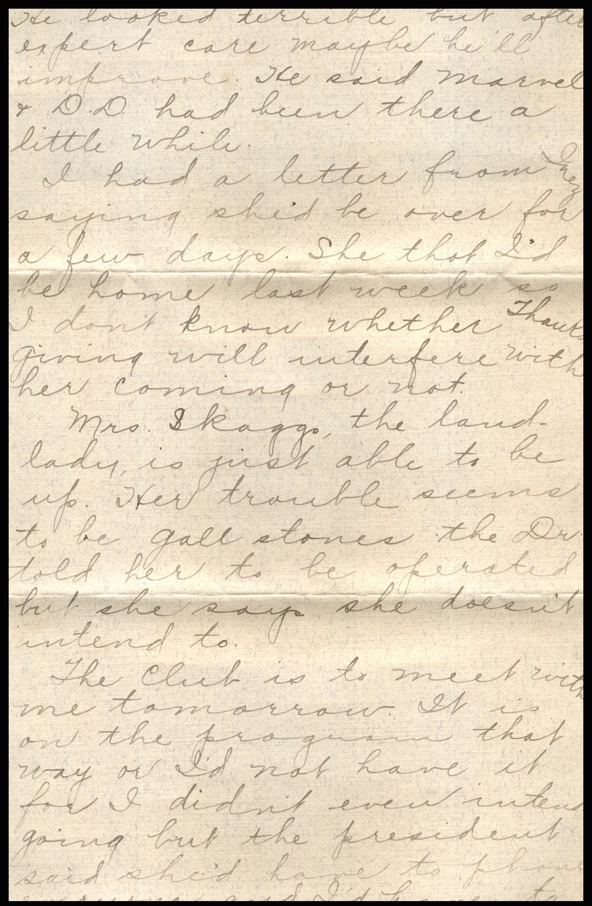
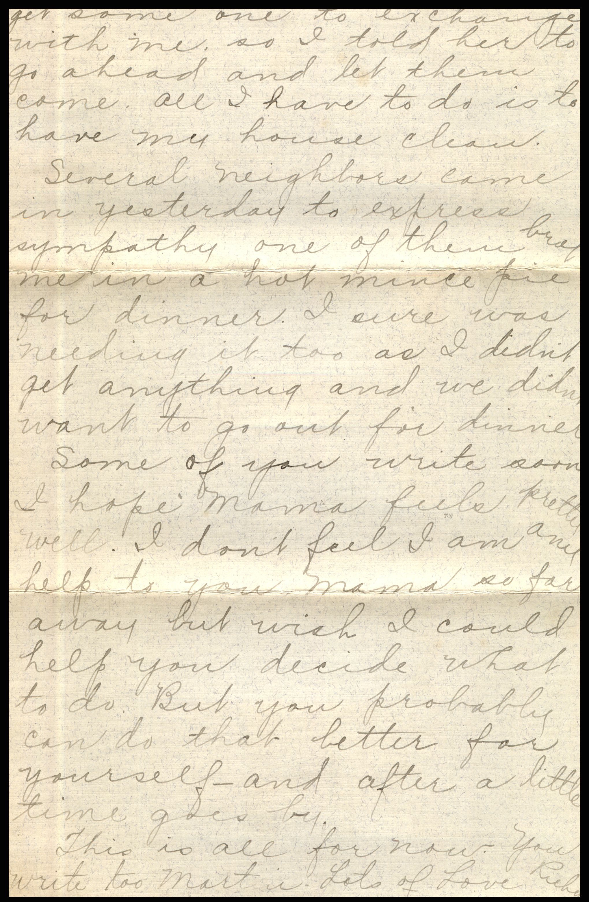
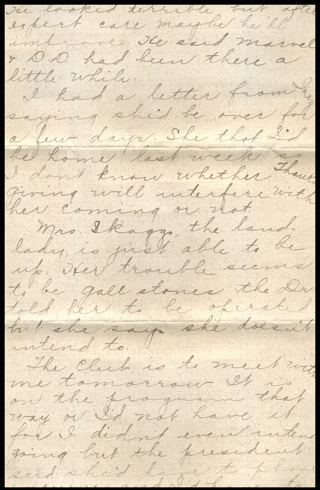
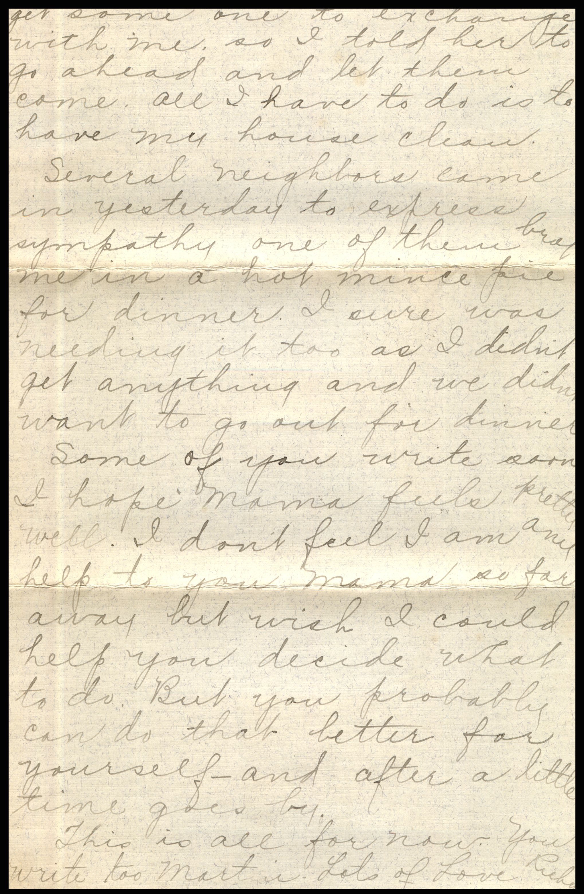

From: Joe Maynard, To: Chandler Family
 From: Joe Maynard, To: Chandler Family
From: Joe Maynard, To: Chandler Family
Greetings for Christmas and New Year Mr. & Mrs. Joe Maynard & Baby Mary Jean Christmas 1927
From: Joe Maynard, To: Chandler Family
Greetings for Christmas and New Year Mr. & Mrs. Joe Maynard & Baby Mary Jean Christmas 1927
From: A.C. Holloway, To: Jeanette Knox Chandler Mailed From: Pearl, Illinois on December 23, 1927
Mailing Address: Mrs. E. H. Chandler 2018 Newland Ave. Chicago, Illinois
Return Address: After 5 days return to A.C.. Holloway Pearl, Illinois
12/23/27 Mrs. E.H. Chandler, I got your letter and sent your order to Anna yesterday. I will send you a bill of it. But you just wait until you come home to pay. Thanking you, A.C. Holloway

From: N.D. McEvers, To: Jeanette Knox Chandler Mailed From: Bedford, Illinois on December 22, 1927
Mailing Address: Mrs. E.H. Chandler Chicago, Illinois 2018 Newland Ave.
Return Address: After 5 days return to N.D McEvers Montezuma, Ill.
Christmas 1927 To Mrs. Nettie Chandler and Family Pearl, Illinois Nettie I know how hard it is for those who are grief stricken by the loss of those near and dear to them, to participate in the joy and happiness of the Christmas Holiday. But we must meet the decree of the Almighty. Separation of the closest must be. Be brave, and meet life's great tasks, happy in the assurance that your husband and father had many friends, knowing his worth, and that you have many friends who as well as I, wish you and yours much joy and happiness. Your old teacher and friend, N.C. McEvers Please supply the address to Annie's letter and mail it for me.


From: Lucile, To: Jeanette Knox Chandler Mailed From Springfield, Illinois on December 21, 1927
On Envelope: Mrs. E.H. Chandler (crossed out:) Pearl, Illinois (Rewritten:) Chicago, Illinois 2018 Newland Please forward
Dear Aunt, We have thought of you often, wondering where you are. Father remains as he has been. We are hoping to have him home, while Kenneth is here to help lift him. Brausford, Mother, and Kenneth each send their love and best wishes. We'd love for you to make us a real visit and take part in our church activities. With love, Lucile

  
 
From: Ruby Chandler Mullholland, To: Jeanette Knox Chandler Mailed From: Fredonia, Kansas on November 21, 1927
Mailing Address: Mrs. E.H. Chandler Pearl, Illinois
Return Address: Mrs. Sam Mullholland Fredonia, Kansas 937 Jackson
Fredonia. Monday. Dearest Mama, Mart, and Lu I guess that includes all that are left at home now. Quite a bunch of us got away all at once. There was another wreck on the C&A so we were detoured into Kansas City via Mo. Pac. you know we only had an hour between trains, so of course we missed our Santa Fe. Sam went to the office at Union Station to get our tickets routed over another R.R. as there was no other Santa Fe so we finally got transferred to the Mo. Pac. to Fredonia. Changing trains once we got here at 10:50 Saturday night. It was easy to spend the time in K.C. We checked our stuff went up town for breakfast, window shopped, and after dinner we went to the new lovers midland theatre and got out in time to get our train at 4:30. It had been snowing out this way. Wonder if you had anywhere. It was so pleasant in K.C. we were sure surprised to step out into snow where we changed trains. The first person we ran into at Kansas City was Beverly Davis and his girl was with him. He was just out of the hospital and getting a train to Wichita. Had been in K.C a month. Had his knee operated and thinks he won't have to use a crutch. He looked terrible but after expert care maybe he'll improve. He said Marvel and D.D. had been there a little while. I had a letter from Inez saying she'd be over for a few days. She thought I'd be home last week so I don't know whether Thanksgiving will interfere with her coming or not. Mrs. Skagg, the landlady, is just able to be up. Her trouble seems to be gall stones. The Dr. told her to be operated, but she says she doesn't intend to. The club is to meet with me tomorrow. It is on the program that way or I'd not have it for I didn't even intend going but the president said she'd have to phone everyone and I'd have to get someone to exchange with me, so I told her to go ahead and let them come. All I have to do is to have my house clean. Several neighbors came in yesterday to express sympathy. One of them brought me in a hot mince pie for dinner. I sure was needing it too as I didn't get anything and we didn't want to go out for dinner. Some of you write soon. I hope Mama feel pretty week. I don't feel I am any help to you Mama so far away but wish I could help you decide what to do. But you probably can do that better far yourself -and after a little time goes by. This is all for now. You write to Martin. Lots of Love, Ruby
Mrs. E.H. Chandler City.
Hall of Pleasant View Lodge No. 940 A.F.&.A.M. Pearl Ill Nov. 15 1927 Resolution of respect; Whereas, Our beloved Brother E.H. Chandler has passed to the Great Beyond, Therefore be it resolved, that we the members of Pleasant View Lodge No. 940 A.F.&.A.M. extended to the bereaved wife and relatives our deepest sympathy, and commend them to the care and keeping of our Heavenly Father. And be it further resolved, that a copy of these resolutions she sent to our Sister Mrs.E.H.Chandler, and that a copy be spread upon our minutes of the lodge and that our charter be draped for a period of thirty days. J.l Beasley Committee: Lennengard A.L. Miller

 From: Rosa and Fred, To: John Roush
Mailed From: Dunlap, Iowa on November 17, 1927
From: Rosa and Fred, To: John Roush
Mailed From: Dunlap, Iowa on November 17, 1927
Mr. John Roush Pearl, Ill c/o Mrs. Chandler
Thursday P.M. Dear Folks, Just got your card. Are sure sorry you were so unfortunate as to get sick there. Hope you are better by now. We would elite to send you our fur coat down for you to wear home. If you will let us low if it will be ample time for it to get there. Am sorry Mr. Chandler had to be taken from you all but it seems like that is our lot - sooner or later to pass on into the life beyond. We have the fresh pork in the cooler so you need not worry over it. Let Jap know when you are going to be in Quincy and they can be on the lookout for you. He is very anxious to see you too. We are all well. Things going about the same. Will close & get this mailed. Lots of love and best wishes to all and extend my sympathy to your mother, Bess to. From Rosa & Fred
From: Craig and Carmen Ramsay, To: Sam Mulholland Mailed From: Kansas on November 15, 1927
Mrs. Sam Mulholland Pearl, Illinois c/o Mrs. Chandler
Dear Mrs. Mulholland, May I express my most sincere sympathy to you and your family in your bereavement. I know only too well what you are going through. I only wish I could do something to brighten your sorrow. Sincerely, Craig and Carmen Ramsay


 From: N. J. Knox, To: Jeanette Knox Chandler
Mailed From: White Hall, Ill. on June 3, 1927
From: N. J. Knox, To: Jeanette Knox Chandler
Mailed From: White Hall, Ill. on June 3, 1927
Miss E. H. Chandler Pearl, Ill.
After 5 Days Return to Greene County Medical Society White Hall, Illinois
Sister & family! Yours received and glad to hear from you and to know all are well. Very sorry indeed to hear of sister Annie's illness. I am guessing her trouble to be Bronchitis- instead of Pneumonia, or Broner's - Pneumonia as it is the wrong time of year for Pneumonia. Bronchitis is trouble enough. I hope when you hear again she will be better. Ruby sure did make some time, that was going some.Loren and he girls will have a great time on their trip to Dunlop and return and when two or more traveling over-land on a trip of like distance it is a great saving of time and expense to go prepared to camp. Mr. & Mrs. J.C. Spencer drove to California last year, was in a home here, and only don't know whether they were alone or not, think they were, but they camped all the way and enjoyed it, saw so much of the county. The general health during winter and to present time has been good, although quite a number of old chronic cases ave passed away o late. Mr. Fox has been very busy some days with calls near towns and here would have 3 on hand in one day. I don't believe his auto hearse was on to Pearl lately, that may have been - it goes to Jacksonville, Manedesto, Roadhouse, and Carrollton frequently. Russell is helping him and has done so on Saturday or other times when not engaged at school - he expects to go to college this fall. Lucile and Brausford drover here from Sadores on Monday for the commencement, they returned Wednesday afternoon today, Kenneth with them. We miss him so much. He will go to 8th grade in Junior High next year. I would proved some way of securely marking plain letters, all clothes - even shoes you take to Annie. They are stolen and would not be so liable to be taken when marked. That last two patients by death, recently, Mrs. Griswalk and Mrs. Staples. The latter was a large woman and as strong as an ox. Bright's disease with cancer of stomach is back. I know Dr. Lucas, now at the State Institution, he supervised me at Manchester, lost his wife last year by death. I had known her long before I had met him. She was reared near Manchester. Since his wife died, he said it was "just a little more than a dog's life in general practice" sleeping at one place and eating at another. He received appointment to Jacksonville and immediately pulled out. He comes to Manchester on Saturdays - principally to collect. I have not been to Jacksonville since last fall - not been any where for some time. I wasn't to go to Jacksonville soon. I must see D. Adams concerning my eyes and have glasses fitted that I can so. I was forced to get a pair here of an optometrist, and they are really doing my eyes an injury. I would be willing to go with you to Jacksonville some time soon, if it is possible I might do more or as much good, if I would go myself - only that you could perhaps have an opportunity to present complaints. When we do go, I could not expect to do other business - as the visit there would take up all of our time. If you want me to go with you, you would have to take your chance on me being in position to go with you when you do come. Practice is rather quiet at present time. I would be glad for you to come at any time. An invitation to Medical Grants at Sidney for tomorrow, but I will not attempt to go. We will expect to hear from the "kids" today, they left there at 4:30 pm with 150 miles or a little more to dive and at 8:30 it was storming here. With no trouble they should be well on their way between Springfield and Decatin, they would not expect to arrive at Sadonia before midnight. They choose the last hour leaving, because it would be cooler and the eve sun to their backs. Your Bro, N.J. Knox I think Belle and Russell will go latter part of next month. We have our Company Medical School much here on the 10th at the Chaytagun grounds, as a basket pit. Nice.
{kind=link}
{kind=link}
{kind=link}
{kind=link}
{kind=link}
{kind=link}
{kind=link}
{kind=link}
{kind=link}
{kind=link}
{kind=link}